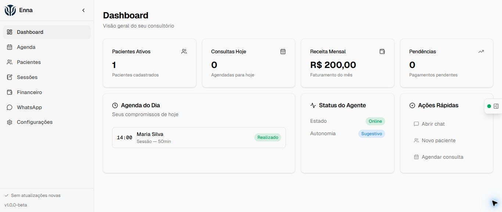
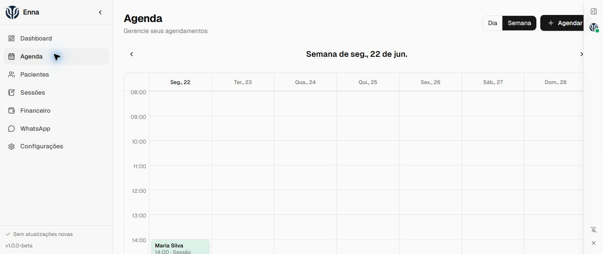

Agenda
Visualize compromissos, confirme, cancele e reagende sem perder o contexto do paciente.
Organização clínica, sem ruído
Agenda, pacientes, sessões e financeiro em um aplicativo Windows criado para a rotina de psicólogas autônomas.
14 dias grátis · depois R$ 29,90/mês · Windows 10 ou 11

Uma rotina conectada
A Enna reúne tarefas que hoje costumam ficar espalhadas entre agenda, planilhas e mensagens.
Visualize compromissos, confirme, cancele e reagende sem perder o contexto do paciente.
Registre a evolução clínica em um histórico vinculado ao cadastro correto.
Acompanhe recebidos, pendências e despesas com valores reconciliados em centavos.
Peça ações administrativas por texto. As mesmas regras do aplicativo valem para a agente.
Demonstração real

Privacidade por arquitetura
Cadastros, sessões, mensagens e financeiro ficam em um banco SQLCipher cifrado. A Enna bloqueia builds distribuídos sem essa cifragem.
O texto necessário para responder é enviado ao provedor de IA configurado por um gateway da Enna. Logs e métricas não armazenam prompts nem respostas.
O paciente pode consultar, confirmar ou cancelar apenas os próprios compromissos. Pedidos de novo horário ou reagendamento aguardam sua aprovação.
Pacientes são arquivados por padrão. O histórico não é apagado por uma instrução à agente.
Preço simples
Sem cobrança no período de teste. Depois, continue por uma assinatura mensal.
Antes de instalar
4367901125ef07db29ca782aa46b66a06ab20998c23622241fbd57f08b44a60aPerguntas frequentes
Não. Ela organiza dados e executa tarefas administrativas. Registros e decisões profissionais continuam sob responsabilidade da psicóloga.
Não. O canal de pacientes é isolado e só permite operações tipadas sobre os próprios compromissos. Dados clínicos, financeiros e administrativos não ficam acessíveis.
Sim. O teste dura 14 dias e a continuidade custa R$ 29,90 por mês. O aplicativo mantém acesso aos dados locais conforme os termos vigentes.
A Enna verifica novas versões e pede sua confirmação. Betas não são instaladas de forma obrigatória.
Escreva para suporte@atrya.com.br. Não envie dados identificáveis de pacientes.